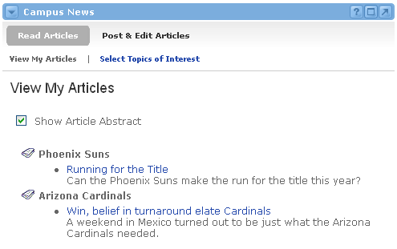

The News channel takes advantage of group functionality in order to assign administrative privileges to the channel features. Administrators can create/edit topics that others will use to publish their news articles. Additionally, the topic creator specifies those groups who will have privileges to publish articles within that topic.

View My Articles
Displays the news topics to which the user had subscribed and a list of current news articles for each of those topics. Clicking the news article title, displays the full text of the news item.
Select Topics of Interest
This option gives users the ability to choose which News Topics and their associated articles will be displayed within their news channel. To subscribe to news articles for particular subjects, check the box(es) next to the desired news topic(s).
Posting and Editing Articles
Manage Article Topics - Users granted privileges to Add, Edit and Delete Topics will see a Manage Article Topics link in the Post & Edit Articles view. By clicking the Manage Article Topics link, the user can search for and edit existing topics, or add new topics. When adding a new topic, the user will be prompted for the topic name and description as well as the groups that should have access to create articles under this topic.
Publish Articles-- Users granted privileges to create news articles will see a Post a New Article link in the Post & Edit Articles view. Click on the Post a New Articles to add a new articles. When adding a news article, you will be prompted for the following information:
After submission of all the information listed above, you will be shown a preview of the News Article. After reviewing the article and confirming its contents, the article will be available to all individuals subscribed to the respective news topic